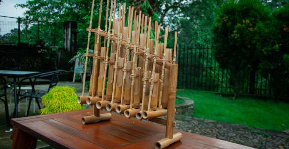
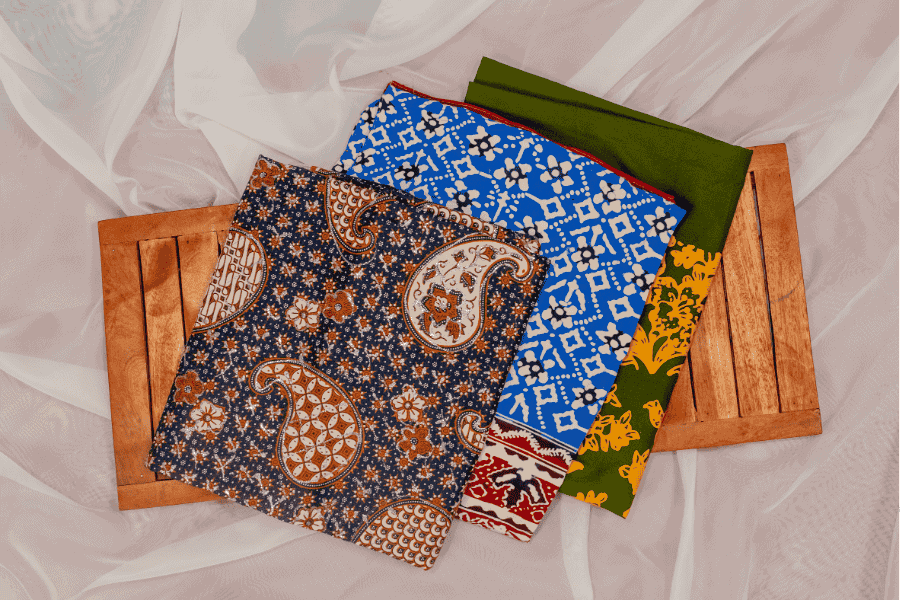
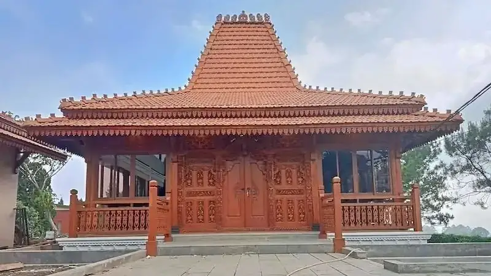
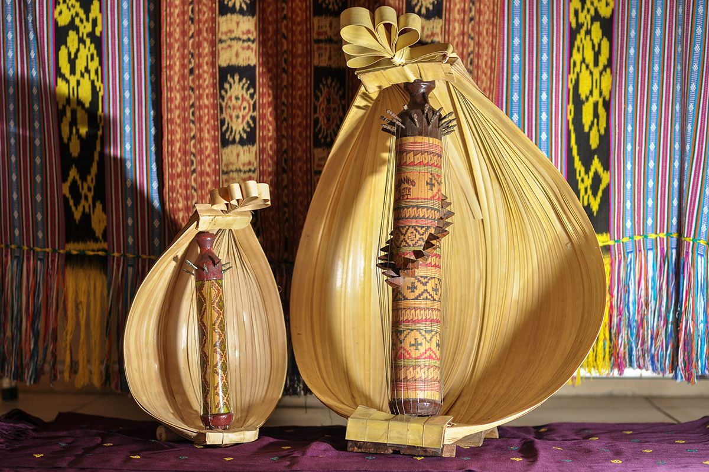

Tari Saman
Tari tradisional dari Aceh dengan gerakan cepat dan kompak.
Keragaman budaya Indonesia yang kaya dan indah
Indonesia memiliki banyak budaya unik dari berbagai daerah di Nusantara 🇮🇩

Tari tradisional dari Aceh dengan gerakan cepat dan kompak.

Tari khas Bali dengan suara “cak cak cak” yang unik.

Alat musik tradisional Jawa Barat dari bambu.

Musik tradisional Jawa dan Bali dengan bunyi khas.

Kain tradisional Indonesia dengan motif khas daerah.

Motif batik khas Cirebon berbentuk awan.

Seni pertunjukan tradisional menggunakan boneka kulit.

Kesenian khas Jawa Timur dengan topeng besar ikonik.

Rumah adat Minangkabau dengan bentuk unik.

Rumah adat khas Toraja berbentuk seperti perahu.

Rumah adat Jawa dengan desain tradisional elegan.

Alat musik tradisional khas Nusa Tenggara Timur.